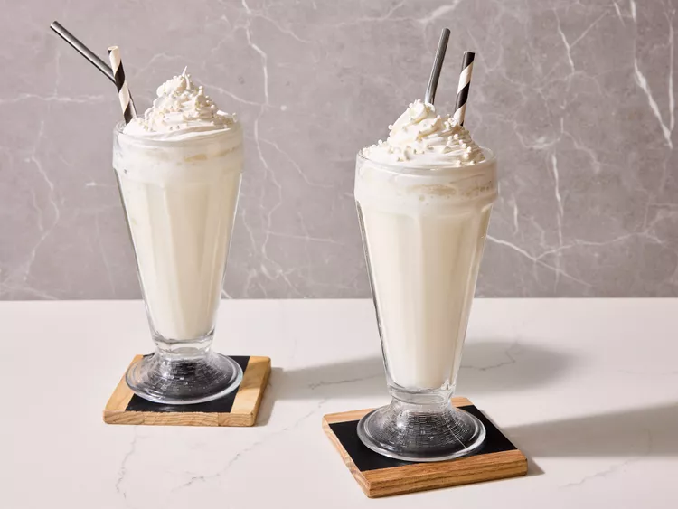

Vanilla Milkshakes without Ice Cream

A creamy, vanilla- forward milkshake made without ice cream, offering a smooth,
drinkable texture that highlights the pure essence of vanilla.
This simple yet decadent milshake offers a refreshining alternative to the traditional
ice cream-based version perfect for those looking to enjoy the essence of vanilla in a lighter, more sipabble form.
Ingredients
- 12 ice cubes
- 2 cups of milk
- ¾ cup white sugar or honey
- 1 dash vanilla extract
Directions
- In a blender, combine the milk, vanilla extract sugar or honey.
- Blend until the mixture is smooth, creamy and well-combined.
- Taste the milkshake and adjust sweetner as desired.
- Pour the milkshake into glases and serve. For an extra-thick consistency,
you can chill the glass in the freezer for 5-10 minutes before serving.